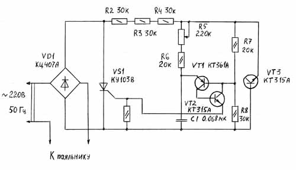
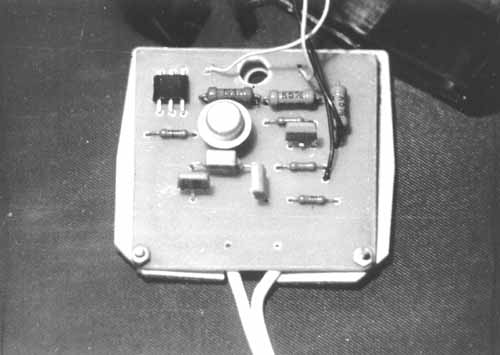
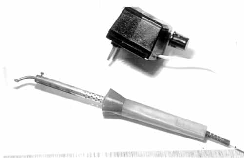

Регулятор мощности для паяльника
При изготовлении и описании регулятора мощности для паяльника использована публикация [1].
Для повышения качества пайки и предохранения жала паяльника от преждевременного разрушения из-за перегрева используются различные устройства, позволяющие регулировать среднее значение напряжения на обмотке нагревательного элемента паяльника. При этом изменяется мощность, выделяемая нагревательным элементом, а значит, и температура жала паяльника. Часто применяемые для этой цели контактные двухпозиционные переключатели, которые монтируют, как правило, в подставке для паяльника, неудобны в пользовании. Во-первых, после того, как паяльник снят с такой подставки, требуется некоторое время для его "догревания" перед пайкой, во-вторых, снятый с подставки он вскоре перегревается, в-третьих, установить при таких условиях точное значение температуры жала паяльника и поддерживать его постоянным, что может потребоваться при монтаже компонентов, требующих осторожного обращения, невозможно.
Для регулирования мощности паяльника лучше всего подходят тринисторные регуляторы мощности. Однако они не всегда обеспечивают плавную и стабильную регулировку мощности. Дело в том, что у тринисторов средней мощности, чаще всего используемых в регуляторах, велико значение удерживающего тока (минимального анодного тока, при котором тринистор может удерживаться в открытом состоянии). Для тринисторов серии КУ202 по техническим условиям этот ток может достигать 300 мА при температуре окружающей среды -60 0C. При реальных условиях эксплуатации он, конечно, меньше, но все же остается соизмеримым с током, протекающим через нагреватель паяльника (180 мА при мощности 40 Вт и напряжении 220 В). Иными словами, с этими тринисторами надежное регулирование при малой мощности нагрузки либо вообще невозможно, либо происходит лишь в узкой центральной области полупериода, где ток нагрузки хотя бы немного превышает удерживающий ток тринистора. К тому же ток удержания - параметр, зависящий от многих факторов, в том числе и от температуры тринистора, поэтому работа такого регулятора не может быть температурно стабильной. Отсюда следует, что при маломощной нагрузке для регулятора необходимо выбирать тринисторы с малым током удержания.
Ниже описана конструкция тринисторного регулятора мощности, рассчитанного на работу с нагрузкой, имеющей номинальную мощность от нескольких ватт до 100 Вт. Регулятор выполнен в виде сетевой штепсельной вилки и позволяет регулировать мощность в пределах от 0 до 95 % от номинальной. В регуляторе применен тринистор КУ103В, у которого удерживающий ток не превышает десятых долей миллиампера.
Принципиальная схема регулятора показана на рис.1.

Рис. 1. Принципиальная схема регулятора.
Тринистор VS1, включенный в диагональ диодного моста VD1, регулирует мощность в течение каждого полупериода сетевого напряжения. Принцип управления тринистором - фазоимпульсный. На управляющий электрод тринистора поступают импульсы, вырабатываемые генератором, состоящим из аналога однопереходного транзистора (VT1, VT2) и времязадающей цепи R5R6C1. Время от начала полупериода сетевого напряжения до момента срабатывания генератора и открывания тринистора определяется положением движка переменного резистора R5. Для повышения помехоустойчивости и улучшения температурной стабильности тринистора его управляющий переход зашунтирован резистором R1. Цепь R2R3R4VT3 формирует из сетевого напряжения трапецеидальные импульсы длительностью 10 мс и напряжением примерно 7 В, которыми питается генератор. В качестве стабилизирующего элемента применен эмиттерный переход транзистора VT3, включенный в обратном направлении. Такой "стабилитрон" работает при значительно меньшем токе стабилизации (десятки микроампер против 5 ... 10 мА у КС168А). Это позволило, во-первых, сэкономить место на печатной плате и, во-вторых, уменьшить мощность, рассеиваемую цепью резисторов R2 - R4.
Регулятор собран на печатной плате (см. рис. 2). Печатная плата крепится в карболитовом корпусе из-под блока питания серии "Электроника". Вид регулятора в сборе показан на рис. 3.

Рис. 2. Печатная плата регулятора.

Рис. 3. Внешний вид регулятора мощности.
Работа с устройством сводится к включению регулятора в сеть и повороту ручки регулятора до получения необходимого значения мощности и температуры жала паяльника.
Меры предосторожности соответствуют обычным мерам предосторожности при работе с электропаяльниками.
Ссылки:
15.12.2003
21.06.2010
Альтернативные источники
энергии
Компьютеры и
Интернет
Магнитные поля
Механотронные системы
Перспективные
разработки
Электроника и технология